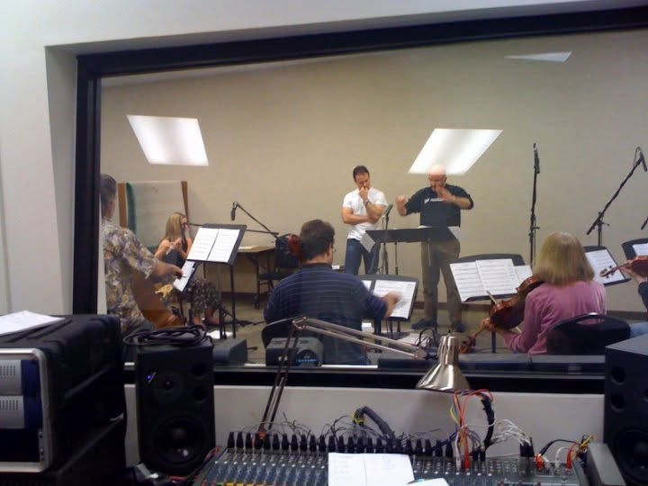

A Journey's End
Composed for the Choral Composition class. Orchestration: Men's Choir (4 Tenors, 4 Baritones, 4 Basses).

Original compositions and recordings. My work spans various genres and styles, from classical to contemporary.
I studied at UCLA Extension's Film Scoring Program, then continued private study with Steve Rothstein. Steve is a gifted composer and teacher, and I highly recommend online study with him.
My favorite classical composers: Beethoven and Mahler. Film music: John Williams (obviously)!
Performed by live musicians
I wrote these pieces while studying in UCLA Extension's Film Scoring Program. Each one was performed by live musicians and recorded at the Musicians Union studios in Hollywood, California.
Playing a track connects to SoundCloud, which sets its own cookies. Or listen on SoundCloud directly.
Composed for the Choral Composition class. Orchestration: Men's Choir (4 Tenors, 4 Baritones, 4 Basses).
Composed for the Writing for Strings class. Orchestration: Violin I & II, Viola, Cello, Bass.
Composed for the Film Scoring I class. Orchestration: Various percussion, Bass Clarinet, Piano, Violin I & II, Viola, Cello.
Produced in the studio
Composed and produced in Nuendo/Cubase and Sibelius, using the EWQLSO Platinum and Stormdrum libraries and Sibelius sound sets.
Written for Steve Rothstein's Composition Seminar.
An unplanned piano improvisation. I sat down at the keys and played it straight through in one take.
A study in Baroque style composition in binary (AABB) form, written for Steve Rothstein's Composition Seminar, with a focus on counterpoint.
An action cue in the style of modern film music.